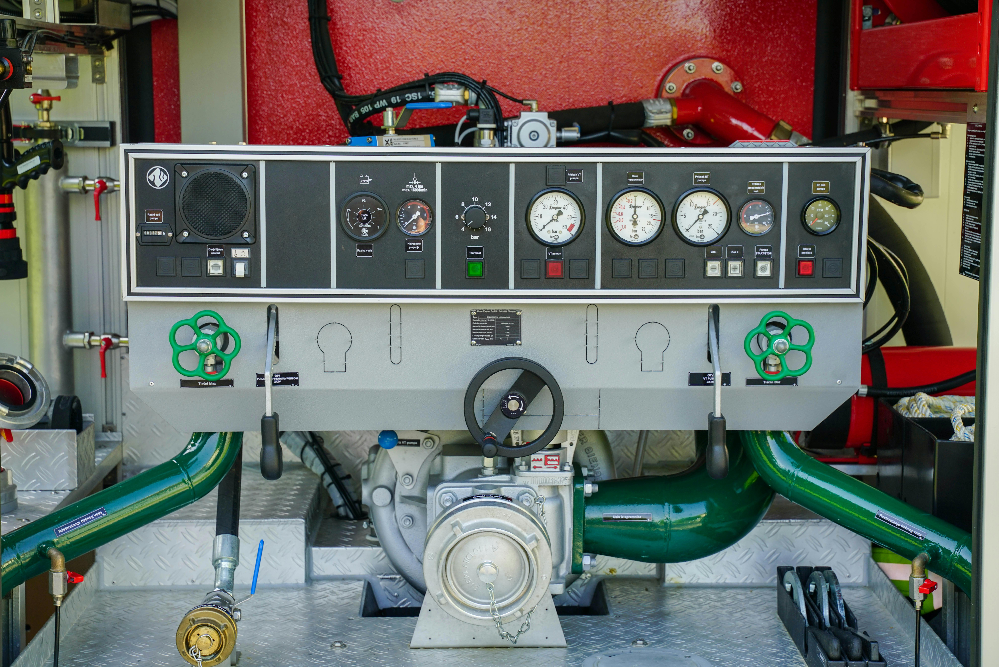

Worldwide Emergency Risk
Engineering and Technologies
Especialistas em dimensionamento, fiscalização e projetos de sistemas de combate a incêndios. Protegemos vidas e património com tecnologia de ponta.
Soluções Integradas de Segurança
Oferecemos um ciclo completo de serviços, desde o projeto inicial até à formação das equipas.
Projetos de Incêndio
Elaboração de projetos de segurança contra incêndios (SCIE), dimensionamento hidráulico e consultoria técnica.
Saber maisFiscalização
Acompanhamento de obra, auditorias de segurança e verificação de conformidade com as normas vigentes.
Saber maisFormação
Cursos especializados em segurança contra incêndios, manuseamento de extintores e evacuação.
Saber maisPorquê a Were.tech?
Expertise Técnica
Equipa de engenheiros altamente qualificados e certificados.
Conformidade Total
Garantia de cumprimento de todas as normas nacionais e internacionais.
Tecnologia Avançada
Utilização dos softwares mais recentes para dimensionamento e simulação.